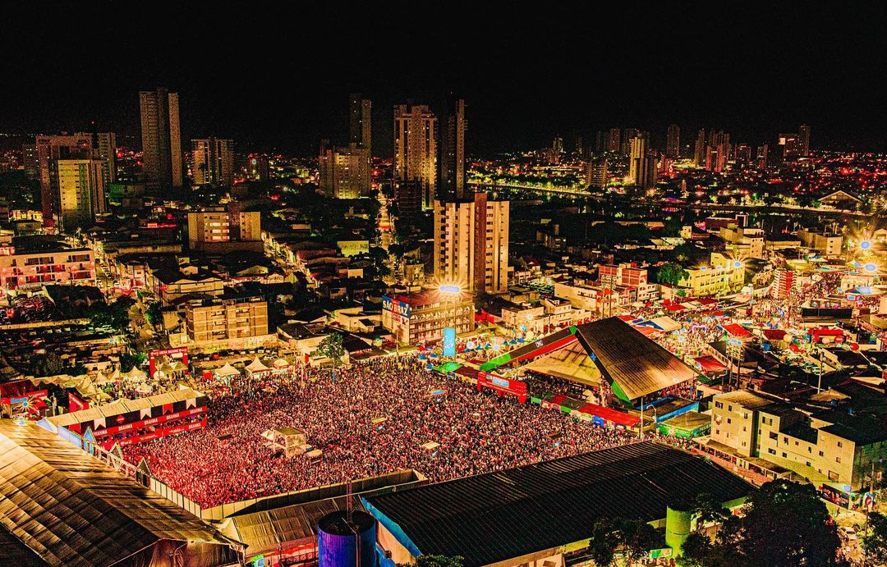

O Maior e Melhor São João do Mundo
'O Maior São João do Mundo' ou 'São João de Campina Grande' é um evento anual realizado pela prefeitura de Campina Grande, no estado brasileiro da Paraíba, durante o mês de junho. Na cultura do Nordeste brasileiro, é típico comemorar o dia de São João através de espetáculos, danças e quadrilhas.